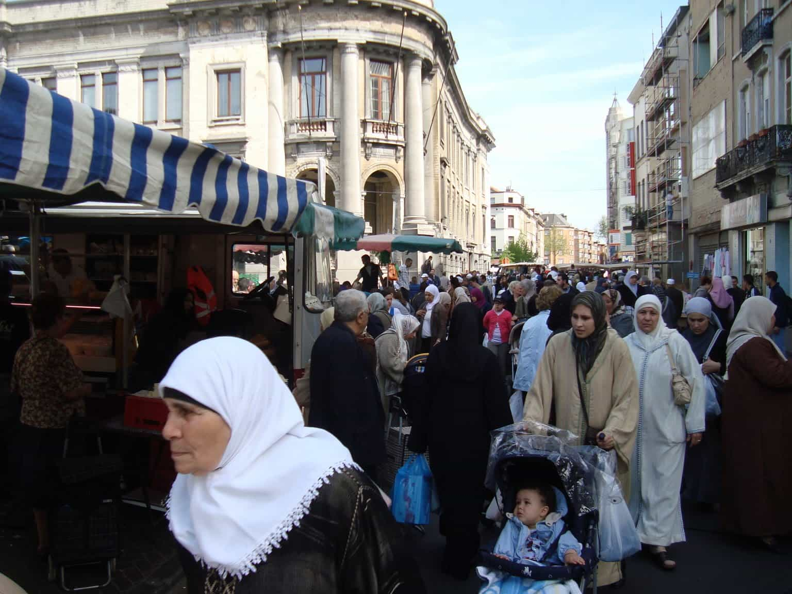
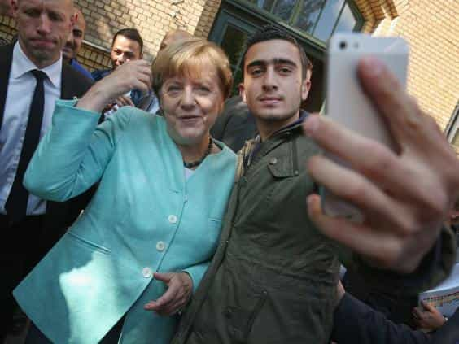

< < < Back
Belgium Rocked By Islamic Terrorism In Spite Of Altruistic Assimilation Policies – Return Of Kings
In a chilling nod to the events at the Bataclan in Paris late last year, terrorist attacks have rocked the Belgian and European capital of Brussels. In the early morning, Zaventem airport was assaulted first by two bombs, followed by another at the Maelbeek metro station closer to the city center. At least 30 people are already confirmed dead, most of them at Maelbeek. Another 200 have been injured. ISIS has claimed responsibility.
The devastating developments in Belgium come hot on the heels of that country’s capturing of the main suspect in the Paris attacks, Salah Abdeslam. If anything, the deaths at Zaventem and Maelbeek seem to be retaliation for the shoot-out and arrest of Abdeslam, an ISIS operative. They also continue Belgium’s strange reputation as a hotbed for producing Islamic extremists. But why, considering how many Muslim immigrants have been welcomed into the country, especially its major cities of Brussels and Antwerp?
Around the time Salah Abdeslam was apprehended, residents in the area of Molenbeek, a heartland for those Muslim migrants who do not wish to assimilate, began throwing objects at police and other emergency responders. In an attempt to keep the fractious Belgian society “together,” one which includes an already unstable division between a Dutch-speaking north and French-speaking south, the European and wider media is making little of this appalling display by supposed Belgians of Muslim backgrounds. Nonetheless, the extremists clearly have many supporters in the suburbs.
Many of the November 13 jihadists in France were from Belgium. For a country so small, Belgium has a serious habit of producing individuals who publicly murder in the name of Islam.
https://www.youtube.com/watch?v=3gCIQGR9PQU
Belgian political elites have repeatedly called immigration fears “racist”
To understand much of what happened in Belgium today, we must first understand the nature of Belgium’s political structures. The country is essentially cleaved in two, between Flanders, a Dutch-speaking, richer, more immigration conservative north, and Wallonia, a French-speaking, less economically robust, more tolerant south. The capital Brussels, once predominantly Dutch-speaking, is a separate, mostly Francophone city-state surrounded by Flanders. Although elites from both sides of the Flanders-Wallonia border have supported the status quo on immigration, even its expansion, the major anti-immigration parties and their well-organized, vocal supporters are in Flanders.
Like Amsterdam and Rotterdam in the Netherlands, Brussels has become a city of blatant segregation and non-assimilation, a situation imposed by migrant communities themselves. The neighborhood of Molenbeek mentioned earlier is just one of many in places like Brussels where multiculturalism has not only failed, but started to threaten the very fabric of Belgian society. These issues existed before the new migrant hordes began arriving last year. However, the authorities in Belgium have had years to stem the tide and have done nothing.
Gay man and former Prime Minister Elio Di Rupo has a penchant, like many of his colleagues, for saying that those who criticize immigration, especially Islamic immigration, are “ruining” the country.
Former Prime Minister Elio Di Rupo, who is from the less anti-immigrant French area of Wallonia, once said that Bart De Wever, the leader of the New Flemish Alliance (N-VA), was stoking racism and “ruining the country’s reputation.” De Wever had called for uncompromising assimilation and integration for those who had arrived in Belgium already and much more stringent restrictions on the number of new arrivals allowed to settle. De Wever actually represents the more centrist of the two Flemish anti-immigration parties, Vlaams Belang having a much more hardline platform.

Yes, this is Molenbeek, Brussels, not Syria.
The risks of Belgium’s massive immigration problem have been spelled out to political elites for years. They have not listened. The Bataclan terrorist murders and the strong association they had with “Belgian” terrorists should have been the wake-up call for the national government in Brussels. They could not have prevented every planned terrorist attack, sure enough, but they could have read the writing on the wall. If they had done so, they would have undertaken an immediate rearrangement of the country’s priorities, demanding the acceptance of Belgian European values and conceptions of citizenship, in addition to turning off the tap of mass immigration.
Thank you, Angela Merkel, for what is coming next

The great priorities of Angela Merkel.
Thanks to the German Chancellor Angela Merkel and her opening of the gates, there are now tens thousands of new young men who have the same convictions as individuals like Salah Abdeslam. Unlike Abdeslam, though, they have none of the longer-term roots in Europe, meaning authorities know nothing about the vast majority of these people.
We must prepare for a wave of new terrorist attacks that blend both existing non-assimilating populations that hate their over-tolerant countries of residence and new arrivals who will soon begin to hate these societies, if they do not already.
As the blood and human remains are being cleaned off the airport floor, the ground of the metro station, and even the clothes and bodies of survivors, cast your thoughts to the individuals who allowed this hatred to percolate in Europe for years. Political elites share as much blame for these deaths as the terrorists themselves.
They saw what was coming. They ignored it. The blood is on their hands.
Read More: France Allows Large Muslim Population, Rewarded With Most Sophisticated Terrorist Attacks Since 9/11